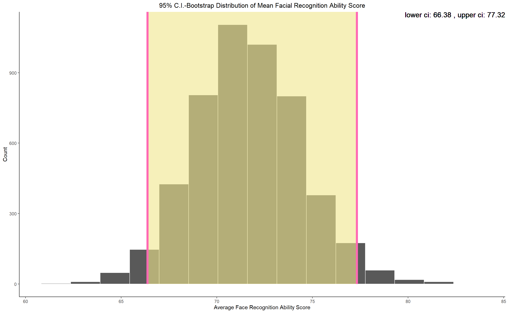

Chapter 7 Results
Here we will take a look at the structure of the data visually and through various tools available to us known as descriptive statistics and will also infer about these results. We will seek for hidden patterns, trends and dependence of variables in our data. We will examine the overall, item-wise per domain and domain-wise data and correlations. Our goal as before would be to extract as much information as possible, about facial recognition ability of college students of India from the response data.
7.1 Visualization
I avoid presenting tables throughout the analysis as I believe the mere numbers presented as they are provide no information by just looking at them until and unless coupled with plots and necessary remarks and have kept them to be presented in the Appendix section, if needed. I tried presenting all the results of the data directly in the plots and have kept away from presenting too much cumbersome information. Every plot is coupled with necessary remarks and insight to be drawn.
- Let’s look at the response proportion for each questions(we refer them as items). We see a there is almost a equal distribution of proportion of people on various items, we observe lesser disagree and strongly disagree compared to strongly agree and agree; neutral also seemed to be a highly chosen response , this hints us towards the fact that the students don’t have a very high or very low facial memory, social understanding related to face recognition is not that prominent. They don’t tend to pay more attention than needed to faces it seems. Facial features doesn’t seem like very important. We will see more on this further in the study though several other plots and analysis.
Before Looking into anything else, we see what the average facial recognition ability score of the students is and looking at the 95% confidence interval it seems the overall performance is slightly above 50%.

We will now look at the correlation between several variables in our data i.e. the correlation between the items and the correlation between the domains and will draw necessary insight from them. After going through the questionnaire one can think that the questions all revolve around the same topic of face recognition so, we expect that the items and domains should be having strong correlation among themselves. We will see the validity of this in the analysis below.
- We take a look at the correlation between all the item’s response. We observe that there is a high positive correlation between all the items from all the domains. It means that people who Agree on one item are likely to Agree with most of the other items and vice-versa. The negatively correlated items(the darker cells) are very few in number and even if they are negatively correlated the strength is very low maxing out at -0.2(only one or two items) mostly between -0.1 and 0.
- We now look at the pairwise correlation between the domain scores of individuals. Since, all the domains are closely related to face recognition ability of an individual it is natural to expect that if a person scores high in any one domain he is likely to have higher face recognition ability overall (see this section called Modeling) and hence have high scores in the other domains too. The regression line fit also reveals positive slope, which means higher score in one domain is likely to imply higher score in other domains and hence overall higher face recognition ability(check further in the study to see this idea explored more).

- Now, after seeing the correlation between the net score of the domains. We take a closer look at each domain’s items and how they correlate among themselves. We got a rough idea of it from the first correlation plot of each item. This reveals that there is all the items in each domain are highly positively correlated with each other. There is no negative correlation observed between items of the same domain, which is consistent with what is expected. MEM6 and ATTNPER4 doesn’t seem to correlate well with the other items. Students even though having high face recognition memory find it difficult to trace back identity and there doesn’t seem to be any inclination towards lower part of the face.
With this we have an overall idea of the correlation among items and domains as well as the proportion of subjects in the response data we collected. We will now move to the next section to infer something from the data. We will nonetheless carry on with visualizing the data wherever possible and necessary.
7.2 Inference
Here in this section, we will conduct several hypothesis testings to find out statistically significant results i.e. if there is enough evidence to say that the population we are targeting posses high face recognition ability using the limited sample we have.
We will also estimate several statistical measures like mean, give confidence intervals and fit probability density functions.
In the following analysis, quite obviously higher score implies high Face Recognition Ability and lower score implies the opposite i.e. low Face Recognition Ability .
- We have already seen in the previous section how our sample shows vague(slightly high) face recognition ability i.e. the larger proportion of people stayed neutral or agreed to most face recognition items. Even though mean and median give good amount of information of the average behavior of the population using the sample, a good fit of probability density functions would reveal the behavior of the entire population and what overall shape of response histogram we can expect. We see that weibull, lognormal and gamma distribution fit all the scores the best out of our choice of probability density functions.(Best fit is decided by Kolmogorov-Smirnov Goodness of Fit) Weibull distribution is similar to normal distribution but it accounts for the skewness or bias seen in the data whereas normal distribution is symmetric. The fact that these distribution fits better than normal is an evidence that the underlying distribution of the population is skewed towards higher score i.e. our population shows tendency towards slightly high face recognition ability.
- We will now look at the mean response score for each item in each domain and we have also mentioned the confidence interval for these scores. Most of the items have neutral responses. The mean score for each item is almost 3(sometimes lower, which is above 50% of the total score that can be obtained out of a total of 5). The standard error(which gives the confidence interval as the 95% confidence interval is nothing but the interval [mean-1.96*se, mean+1.96*se]) is low. So, looking at the 95% C.I. for the scores we can be sure that our sample definitely gives good estimate that the mean for each item is around 3 i.e. on an average the population does not posseses high or low face recognition ability.
- We see similar results as the above one from the net score in each domain. We see that that the average net score in each domain is 50% less than than the total score that can be obtained in that domain. The small 95% confidence interval makes us believe more that the sample average is indecisive standing at around 50% of the total score. Hence, in every domain we see only a slightly higher levels of face recognition ability.
- We will now see whether the males and females have different takes on face recognition ability. To do this analysis we frame our null hypothesis that males and females on an average don’t differ in face recognition ability. We test this null against a two-sided alternative. We carried a two-sample t-test and found out that we are not able to reject the null hypothesis. Hence, we conclude that there is not enough statistical evidence that male and female differ on their take in face recognition ability. So, just as were doing from the start, we won’t differentiate between male and female scores. We find that the average face recognition ability score of most of the domains are almost similar i.e. conducting the one-factor ANOVA test for equality of means we find that there is not enough statistical evidence to reject the fact that the means of all the domain scores are different. I strongly believe that these tests are limited by the sample size and if we had access to a bigger sample the means of all the domain scores in a single one-factor ANOVA test would come out to be same.
With this we conclude the inference section of our study. We will use the insights gained from this section and the previous section to guide our data analysis further in the next sections.
7.3 Modeling
In this section, we will see the dependence of one domain score on the other domain scores, the item scores on the domain scores and domain scores on the total scores. This will help us identify which domain score is the most differentiating so as to get higher face recognition scores. It is important because those are the domains we need to improve so as to achieve better total scores. We won’t be fitting complicated black box models as our goal is not to predict the face recognition ability of a student rather we want to draw inferences from the models. Linear Models fit perfectly in that sense.
- First, we start by looking at the domain score’s dependence on the other domain scores. This will help us get an idea of how knowing that one person scores in all the domains except one will perform in the left out domain. From the coefficient forest plot below we see that most of the coefficients in the significant linear model have high positive values. Thus, if a person has high scores in one of the domains, it is expected and observed that he will have high scores in the rest of the domain. We also observe all the other domain scores explains the variability of ATTNPR, SOC and FAC domain score(looking at the model R-squared values, these are above 60%) very well. MEM seems to be dependent on the FAC, SOC depends on ATTNPER and FAC, ATTNPR depends on SOC as well as FAC depends on SOC.
- Let’s look at the dependence of the item scores on the domain score. We will look at it in two ways to better understand what’s going on. We below fit a linear regression model of each item on the domain score, so as to understand given a particular total face recognition ability score in a particular domain, what is the expected scores in each of the items of that domain. We observe increase in any item score increases the overall score in that domain(from the correlation graphs among items we know one item score increases implies other scores are likely to be high too). We observe an issue with many items in all domains except SOC as even when the domain score is 100%(which means all item scores for that individual must be 5) our fitted regression line predicts that item score to be 4 or 3 and even 2 this means that the students even with high face recgonition ability find it difficult to agree with these items and on looking at these items we understand that students don’t tend to remember identity and faces very well and they don’t pay much attention to face, many students don’t have strong preference for any facial features it seems. We also get an idea of which items are generally agreed by most of the people(even the ones with lower face recognition score) i.e. if we draw a vertical line in each of the plots we will get the score of each item predicted at that level of domain awareness. All the items in SOC has same predicted scores. Facial Memory tend to degrade over time.
- After we have seen the above insight, it is quite natural to ask how can we improve on the overall domain score by imparting education particular to each item. We will answer that now by looking at the dependence of Total Score in each domain on the item scores that compose it. Obviously, we see as expected that there is positive slope as increasing item score increases domain score trivially. One important thing to notice is that agreeing completely or scoring even full in one item doesn’t imply that the overall domain score is near full, it maxes out at about 60% for almost all the domains, which reinforces the fact that students perform okayish in face recognition situations. We see that is the slope of MEM6 and ATTNPER4 are lower compared to rest of the items which implies as of now(from our sample’s level of face recognition ability) that students find it harder to remember faces and their identities and there is a no particular preference for the lower part of the face.
- Finally, we take a look on the same analysis we saw above for items conducted on domain level awareness and overall face recognition ability score. We breakdown the predicted composition of the total face recognition ability(overall score) in terms of the domain scores. We see that students have higher contribution in their overall face recognition score from the domain awareness of attention and perception. Apart from Attention and perception all the other domain scores maxes out at around 80% when the total score is 100%(i.e. all the domain scores should be nearer to 100%).
- So, as a result to see how the dependence of total scores are on the domain scores, mainly the slope will be important for us to analyse face recognition ability. It is again focused that the total score maxes out at about 90% even when all domain scores are 100%, which implies further students don’t have a very clear or strong face recognition ability.
This section provided lots of insight on the areas which comprises the face recognition ability of the students. Now, we move on to testing the reliability of the responses after a brief discussion on clustering
7.4 Clustering
Face Recognition Ability Score consists of 4 domain scores as per our Questionnaire Survey. Since, our questionnaire captures the opinion or preference of the students, we might expect some students to have similar opinions on few items or domains and some have different opinions. Based on these opinions the items will also have different clusters capturing the similar trends in what the students believe. So, we are interested in taking a look at the clusters of similar items from all the domains as obtained from the observations and we are also interested in what composes the high-scorers(higher face recognition ability) overall face recognition ability. What are the domains students find it hard to see how important face is and remember them an idea about and how the items group together to convey similar ideas are some of the areas we will focus on in this section of the study.
- We will first take a look at correlation-distance based clustering of items. The way we interpret the dendrogram is the items that fuse further up in the dendrogram are more disimilar(based on correlation) to the items that fuse below. This reveals the underlying similarity of the items very well and also sheds light of the items that don’t go very well with the rest of the items. Most items of MEM, FAC, SOC and ATTNPER cluster together in their own groups except for some questions which don’t very well.
- Now, we will look at the clustering of items along with the clustering of students based on Maximum Distance(which best separated the classes of students based on their scores from low overall face recognition ability scorers to high overall face recognition ability scorers and also separated the items on which the students performed worst to best). Looking at the heatmap distribution, we see that most of the students stayed neutral or even disagreed and strongly disagreed to the items apart from ATTNPER and MEM2. Most student agreed with ATTNPER items like ATTNPER1, ATTNPER3, ATTNPER5, MEM2. Students have higher rate of response to known faces and they focus on face as an overall and not just a particular part.
- We now turn our attention to domain level analysis. Clustering based on correlation-distance as before revels which domain are similar to the other domains. If some domain is not similar to the other domain students lacks specially in this aspect of face recognition. We see students don’t remember faces very well and have okayish kind of facial memory.
- We see reinforcement of the same fact as before i.e. students even though pay attention and have good perception of face find it hard to remember faces. They don’t see faces to have a strong social impact and facial feature preference is mostly neutral.
This section was very useful in understanding the underlying clustered behavior of the items and domains. It helped us further pin-point how the face recognition ability is distributed across various domains and people.
7.4.1 PCA
With so many items of 5 scale rating, exploring the directions of the data that summarizes the overall response reasonably may give us an idea of which items and domain decides mainly the face recognition of the students.
- Firstly, we see on the Domain Level PCA. Seeing the overall spread of the data and the directions of strongly agree, agree, neutral, disagree and strongly disagree. We see students strongly agree on ATTNPER, agree on MEM and SOC, stay neutral, disagree and strongly disagree on FAC. The overall inclination strength in each of the domain can be understood from what is shown by the distribution of the data points below spanned by the two leading principal components.
- We will finish this PCA analysis with item level PCA. We get the directions of maximum variance of the responses. We see that the students strongly agree with items ATTNPER1, ATTNPER3, ATTNPER5, FAC7, SOC4, FAC1 and agree on MEM6, MEM4 i.e. students find face to be an overall entity without particular preferences for regions, they believe it to be important for information processing, familiar faces trigger response quicker. Whereas, we see that there is a strong disagreement on SOC items SOC2, SOC3, SOC5, ATTNPER2 with neutral and disagreement on rest of FAC and SOC items which reveals students either don’t believe or are actually not attracted towards external features of the face and beauty. Though magnitude is less there is slight agreement on the fact that beautiful looks give better opportunity.
7.5 Reliability
In this section, we will conduct reliability analysis of the survey response data.Reliability analysis allows you to study the properties of measurement scales and the items that compose the scales. The Reliability Analysis procedure calculates a number of commonly used measures of scale reliability and also provides information about the relationships between individual items in the scale.
Hence, we will here get an overall index of the repeatability or internal consistency of the scale as a whole, and you can identify problem items that should be excluded from the scale
- We will start from Memory Domain and then will move on sequentially as the structure of Questionnaire and will obtain the reliability indices using the Cronbach’s α. We detect that there is a problem with the MEM6 item with the rest of the item in this domain. The r.drop value for MEM6 is very low which implies this item doesn’t correlate well with the other items in this domain. Even the raw_alpha increases substantially if MEM6 is dropped. MEM6 doesn’t fit reliably in the MEM domain and it might be a reason we saw it score low among the students in the previous section.
- Let’s look at the Attention and Perception domain. The reliability score is very good(i.e. raw_alpha about 0.7). ATTNPER4 seems to be not correlating good with the other items in this domain. It might be because the question seems bit of a preference questions rather than a face recognition question.
- The reliability of SOC is very good. All the items fit good except SOC4 which is not that worse. Students tend to believe and at the same time unsure whether good looking persons get better opportunity.
- The reliability of the FAC Domain’s response is good. The FAC1, FAC6 and FAC7 seems to be little unrelated to the other questions.
- Now, if we look at the overall reliability of the entire questionnaire for finding the face recognition ability. It turns out that it has excellent reliability. Most the items fit in the scale very well given the goal is mainstream and we need to decide about the face recognition as a whole. But if each part of the survey on different domains are seen, then it turns out that few items for few domains don’t fit in well in reliably finding the domain-level environmental attitude. We however see, as the domain’s item statistics shows, that some items doesn’t fit well with the other items very well which are FAC1, FAC6, MEM6 and SOC4.
This ends the reliability analysis of our response data and the reliability of all the domains are good. The overall survey for face recognition measure is excellent.
Hence, we have covered almost all aspects of the response data and have explored the breadth and depth of the data. The summary of findings and suggestions drawn as a conclusion of the above analysis is presented in the Conclusion section of my study.